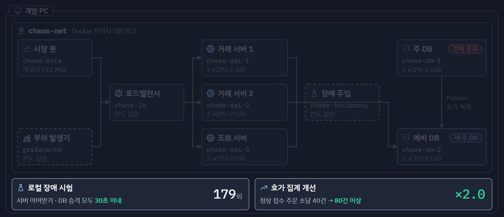
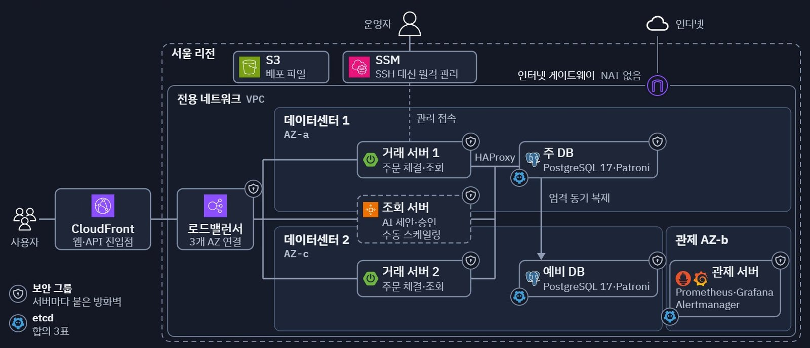
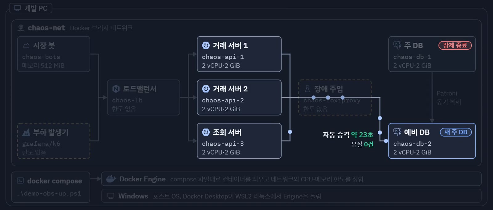
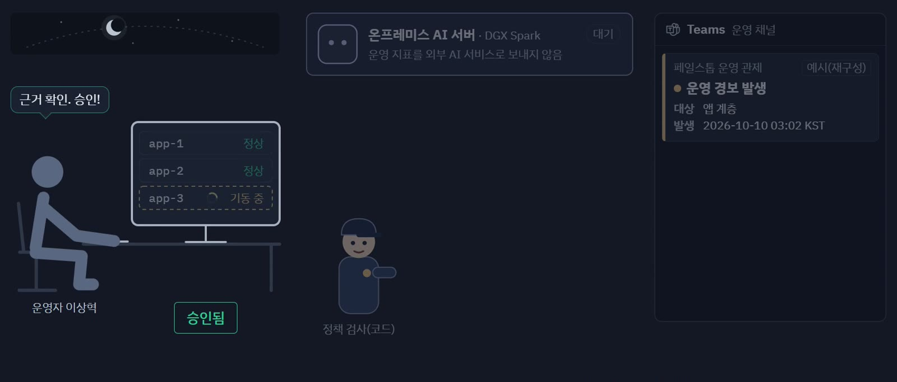
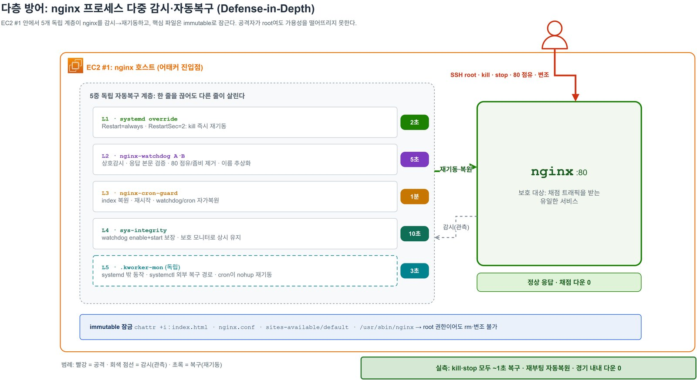
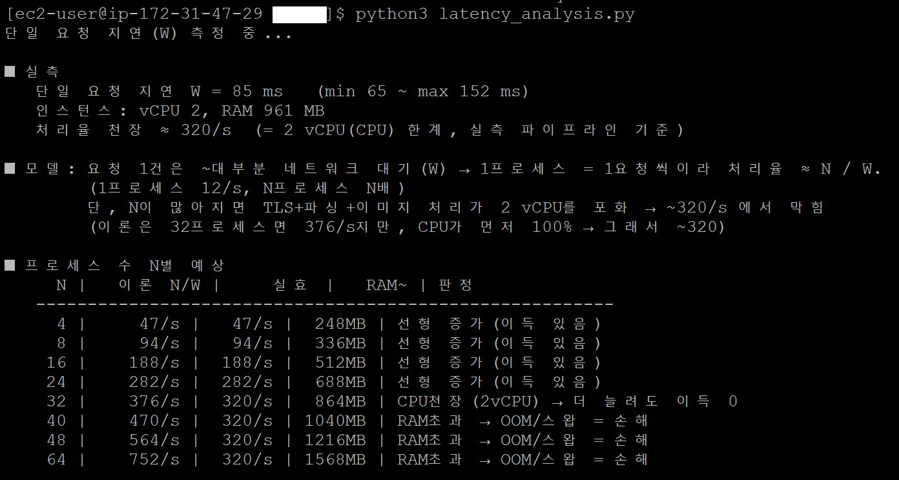
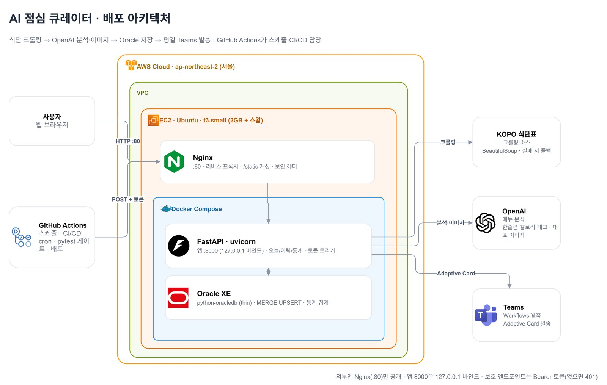
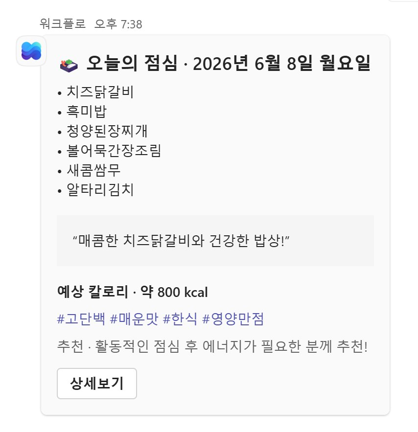

System · Infra Engineer
이상혁
Lee Sang Hyeok
서버를 직접 세워 보고,
일부러 장애를 내 보면서 배웁니다.
- kljl6773@gmail.com
- 01failstop사람이 몰려도, DB가 멈춰도 이어지는 거래소03
- 02keep-nginx-alive공격을 막을 수 없는 경기에서 서버를 지킨 기록10
- 03high-throughput-image-pipeline작은 서버 한 대로 속도를 끌어올린 과정13
- 04ai-lunch-curator수집부터 배포까지 알아서 굴러가게14
- 05sangkwon-platform-poly팀 서비스를 끊김 없이 배포하기15
백엔드로 시작했지만, 지금은 서버가 멈추는 순간이 더 궁금합니다
처음에는 기능을 만드는 일이 재미있었습니다. 그런데 직접 만든 서비스를 배포해 보니, 서버가 갑자기 멈추거나 사람이 한꺼번에 몰리면 어떻게 되는지가 더 궁금해졌습니다. 그래서 지금은 설정을 손으로 하나씩 해 보고, 일부러 장애를 내서 정말 복구되는지 확인하면서 공부하고 있습니다.
01
리눅스 서버를 직접 다룹니다
계정과 권한, 로그, 방화벽, 디스크를 직접 설정했습니다. 디스크를 하나 빼 보고, 용량을 일부러 채워서 경보가 제대로 오는지도 확인했습니다.
02
장애를 일부러 내 봅니다
DB를 강제로 꺼서 예비 DB가 바로 이어받는지, 그 사이 주문이 사라지지 않는지 확인했습니다. CTF 경기에서는 공격을 받는 동안에도 서비스를 한 번도 내리지 않았습니다.
03
지켜보는 일도 자동으로 합니다
Prometheus와 Grafana로 상태를 보고, 경보가 울리면 AI가 원인을 정리해 Teams로 보고하게 했습니다. 배포는 GitHub Actions에 맡겼습니다.
지금까지 해 온 프로젝트
주로 쓰는 기술
- 서버 운영
- Linux · systemd · nftables · Docker · Nginx · HAProxy
- 클라우드
- AWS EC2 · ALB · Auto Scaling · CloudFront · SSM · S3
- 관제·자동화
- Prometheus · Grafana · Alertmanager · GitHub Actions
- 데이터
- PostgreSQL · Patroni · Oracle · Redis
- 개발
- Java · Spring Boot · Python · FastAPI · TypeScript
혼자 진행한 프로젝트 · 2026년 7월 ~ 10월
사람이 몰려도, DB가 멈춰도 거래가 이어지는 서버를 만들고 싶었습니다
직접 만든 모의 거래소를 '실제로 운영해야 하는 서비스'라고 생각하고 인프라를 처음부터 세웠습니다. 바로 클라우드로 가지 않고, 내 PC에서 먼저 망가뜨려 보고, 망을 그려 보고, 가상 머신으로 서버를 세워 본 다음 AWS로 옮겼습니다.




AWS 서울 리전
한쪽이 멈춰도 버티도록, 서버를 두 곳에 나눠 두었습니다
- 거래 서버와 DB는 두 데이터센터에서로 다른 가용 영역에 한 대씩 두었습니다. 한쪽에 문제가 생겨도 다른 쪽이 거래를 이어 갑니다.
- 조회 서버는 평소에 꺼 둡니다사람이 몰릴 때만 켜지게 해서, 늘 켜 두는 비용을 아꼈습니다.
- 확인받은 주문은 잃지 않는 DBPatroni 엄격 동기 복제를 써서, 주 DB가 멈추면 같은 내용을 가진 예비 DB만 새 주 DB가 됩니다.
- 서버 접속은 SSM으로SSH 대신 AWS SSM으로 접속해 관리했고, 배포 파일은 S3에 두었습니다.
- 한 달 40만 원 안에서평소 사용량으로 계산하면 세금을 포함해 약 36.7만 원이 듭니다.
내 PC의 Docker
클라우드에 올리기 전에, 내 PC에서 179번 먼저 망가뜨려 봤습니다


| 어떤 장애를 | 몇 번 | 가장 오래 걸린 이어받기 |
|---|---|---|
| DB 연결 끊기 | 28 | 13.5초 |
| 거래 서버 강제 종료 | 48 | 12.9초 |
| 거래 서버 멈춤 | 28 | 13.4초 |
| 네트워크 끊기 | 17 | 11.1초 |
| 주 DB 강제 종료 | 15 | 27.0초 |
| DB 지연 등 그 밖의 시험 | 43 |
시험하다 찾은 문제도 고쳤습니다
- 연결이 끊기면 거래가 멈춰 버렸습니다DB 쪽에 연결 시간 제한을 걸어 고쳤고, 바로 다음 시험에서 13.9초 만에 이어받았습니다.
- 호가를 모으는 부분이 느렸습니다1초짜리 캐시를 두었더니, 놓치지 않고 받는 주문이 초당 40건에서 80건 이상으로 늘었습니다.
Packet Tracer와 가상 머신
꼭 필요한 길만 열어 두고, 막는 일은 층마다 나눠 맡겼습니다
입구에서 요청을 열어 봅니다HAProxy
암호화된 요청을 풀어 내용을 확인하고, SQL 주입 시험 요청은 403으로 돌려보냈습니다.
필요한 포트만 열어 둡니다pfSense
웹 서버는 앱 서버의 8080 포트로만 갈 수 있고, DB로 바로 가는 길은 막혀 있습니다.
수상한 요청을 알려 줍니다Suricata
웹과 앱 사이를 지켜보다가 스크립트 삽입 시도를 찾아 관제 서버에 경보를 보냈습니다.
서버마다 한 번 더nftables
기본은 모두 막고 필요한 것만 엽니다. 규칙은 원본 하나로 여섯 대에 똑같이 맞췄습니다.
온프레미스 AI 서버와 Teams
새벽에 경보가 울려도, AI가 먼저 원인을 정리해 둡니다


- CPU 경보가 울리고, Teams로 바로 알림이 갑니다.
- AI가 지표와 서버 수, 최근 조치를 모아 조회 서버를 한 대 늘리자고 제안합니다.
- 저는 근거를 확인하고 승인합니다.
- 승인하고 67초 뒤 조회 서버가 합류합니다.
- 경보가 풀리고, 장애 보고서가 Teams로 옵니다.
- AI는 제안만 합니다서버를 바꾸는 일은 제가 승인해야 실행됩니다. 허용해 둔 조치 다섯 가지 밖의 제안은 코드가 먼저 걸러 냅니다.
- DB 전환은 AI에게 맡기지 않았습니다되돌리기 어려운 일이라, 충분히 검증된 Patroni 규칙이 맡게 했습니다.
AWS와 가상 머신에서
무엇보다 데이터를 잃지 않는 것이 중요했습니다
DB가 갑자기 꺼졌을 때AWS
23.0초
주 DB의 전원을 갑자기 끊자 예비 DB가 스스로 주 DB가 됐습니다. 끊기기 직전에 들어온 주문 196건을 하나씩 대조했고, 사라진 주문은 없었습니다.
OS를 통째로 지웠을 때가상 머신
15분 22초
DB 서버의 OS와 데이터 디스크를 지운 뒤, 다시 설치하고 백업으로 되살리기까지 걸린 시간입니다. 따로 받아 둔 DB 백업도 원본과 표 109개가 모두 일치했습니다.
평소에 해 두는 일
- 앱은 로그인할 수 없는 전용 계정으로 돌립니다.
- 로그는 재부팅 뒤에도 남도록 디스크에 보관합니다.
- 방화벽 규칙을 잘못 넣으면 90초 뒤 저절로 되돌아갑니다.
- 디스크 여유가 15% 아래로 떨어지면 경보가 옵니다.
- 디스크 하나가 고장 나도 RAID1로 버팁니다.


해 보면서 배운 것들
| 무엇을 했나 | 어디서 | 결과 |
|---|---|---|
| 일부러 낸 장애 | 내 PC | 179회, 모두 30초 안에 이어받음 |
| 주 DB 전원 차단 | AWS | 23.0초 만에 전환, 주문 유실 0건 |
| 사람이 몰릴 때 서버 늘리기 | AWS | 경보부터 합류까지 4분 44초 |
| 느린 부분 고치기 | 내 PC | 받는 주문 초당 40 → 80건 이상 |
| OS를 지운 뒤 되살리기 | 가상 머신 | 15분 22초 |
- 장애는 '나는지'보다 '알아채고 되돌리는지'가 중요했습니다처음에는 이중화만 해 두면 된다고 생각했습니다. 해 보니 경보와 보고, 복구 절차까지 함께 있어야 실제로 운영이 됐습니다.
- 자동화에도 선이 필요합니다DB 전환은 검증된 규칙에, 서버 증설은 AI 제안과 사람의 승인에 맡겼습니다. 누가 책임지는지 흐려지지 않게 하려는 선택이었습니다.
- 숫자는 조건과 함께 남겨야 믿을 수 있습니다모든 시험의 환경과 회차, 실제 명령과 화면을 기록해 두어 나중에 다시 확인할 수 있게 했습니다.


3인 팀 조장 · 2026년 5월 · 공격/방어 CTF
공격자를 막을 수 없는 경기에서, 서버를 한 번도 내리지 않았습니다
교수님이 root 권한으로 들어와 nginx를 끄고 포트를 빼앗는 경기였습니다. 규칙상 공격자를 차단할 수 없어서, 막는 대신 '쓰러져도 바로 일어나고, 안 되면 다른 서버로 비켜서는' 구조를 만들었습니다.
제가 한 일 복구 · 감시 · 페일오버 방어 구조 전체를 설계하고 만들었습니다.

쓰러지면 다섯 겹으로 일으키고, 그래도 안 되면 비켜섭니다

- 다섯 겹의 복구systemd 재시작(2초), 감시 스크립트 둘(5초), cron(1분), 무결성 감시(10초), systemd 밖의 독립 감시(3초)가 서로를 살립니다. 여럿이 한꺼번에 고치다 부딪히지 않도록 flock으로 순서를 맞췄습니다.
- 오염되면 스스로 빠집니다페이지 내용이 바뀌면 헬스체크가 503을 돌려 로드밸런서에서 빠지고, 깨끗한 다른 서버가 채점을 받습니다.
- 공격자의 명령을 모두 기록합니다auditd로 명령을 모으고, 로그인 · 명령 · 다운과 복구를 Teams 세 채널로 바로 알렸습니다.
세 번의 공격을 받았고, 세 번 모두 서비스는 살아 있었습니다

- 1차감시 스크립트를 무력화하고 정찰했습니다남아 있던 다른 복구 장치가 1분 안에 되살렸습니다.
- 2차apache2를 설치해 80 포트를 빼앗았습니다팀원이 직접 정리하는 동안, 그 서버는 스스로 빠지고 로드밸런서가 다른 서버로 우회해 끊김이 없었습니다.
- 3차nginx가 다시 켜지지 못하게 막았습니다감시 스크립트가 막힌 것을 풀고 다시 띄웠습니다.
서버 안에서 끝까지 버티기보다, 망가진 서버를 빼고 새것으로 바꾸는 쪽이 실무에 가깝다는 것을 배웠습니다. 이 생각이 failstop의 증설과 교체 구조로 이어졌습니다.
3인 팀 · 2026년 6월 · 팀 제출본으로 채택
작은 서버 한 대로 속도를 끌어올리고, 막히는 곳이 CPU라는 걸 찾았습니다
t3.micro(CPU 2개, 메모리 1GB) 한 대로 상품 이미지를 최대한 빨리 모으는 과제였습니다. 세 명이 각자 만들어 속도를 겨뤘고, 가장 빠른 제 구현이 팀 제출본이 됐습니다.
처음에는 네트워크가 막힐 거라고 생각했습니다. 그런데 요청 하나의 시간을 재고 동시성을 올려 보니, 차단은 한 번도 없었고 CPU가 먼저 100%에 닿았습니다. 그래서 프로세스를 늘리는 대신 코루틴으로 동시성을 내서, CPU는 꽉 채우고 메모리는 절반만 쓰게 했습니다.
| 방식 | 200장 걸린 시간 | 처리 속도 | 메모리 최대 |
|---|---|---|---|
| 코루틴(프로세스 2 × 128) | 16.14초 | 284장/초 | 47% |
| 프로세스 32개 | 20.12초 | 223장/초 | 86% |
| 프로세스 46개 | 16.45초 | 274장/초 | 99% |

3인 팀 조장 · 2026년 6월
식단표 수집부터 Teams 알림, 배포까지 알아서 굴러가게 만들었습니다
매주 월요일 GitHub Actions가 식단표를 모으고, AI가 메뉴를 정리해 DB에 쌓습니다. 평일 아침에는 그날 점심이 Teams로 옵니다. 저는 전체 구조와 웹 · DB, 그리고 Docker · EC2 · Nginx 배포와 CI/CD를 맡았습니다.
- 테스트를 통과해야만 배포됩니다pytest를 배포 앞의 관문으로 두어, 깨진 코드가 서버에 올라가지 않게 했습니다.
- 비용이 드는 주소는 토큰으로 막았습니다AI를 부르는 수집 주소를 아무나 호출하지 못하게 했습니다.
- 같은 메뉴 그림은 다시 만들지 않습니다메뉴를 해시로 묶어 두어, 이미 만든 그림은 다시 쓰고 AI 호출을 줄였습니다.


4인 팀 팀장 · 2026년 7월
서버 한 대가 빠져도 서비스가 멈추지 않게 배포했습니다
서울시 상권 데이터를 지도에서 비교하는 서비스입니다. 저는 상권분석 · 지도 백엔드와 팀 공통 기반, 그리고 배포를 맡았습니다.
- 서로 다른 가용 영역에 서버 두 대로드밸런서가 HTTPS와 헬스체크를 맡고, 한 대가 빠지면 나머지가 요청을 받습니다.
- 서버를 늘려도 되게 상태는 DB로로그인 세션, 스케줄러 중복 실행 방지, 요청 제한을 모두 DB에서 함께 쓰게 했습니다.
- 한 대씩 바꾸는 무중단 배포진행 중인 요청을 최대 20초 기다렸다가 내리고, 그동안 다른 서버가 요청을 받습니다.
각 프로젝트의 자세한 내용은 GitHub에 정리해 두었습니다.